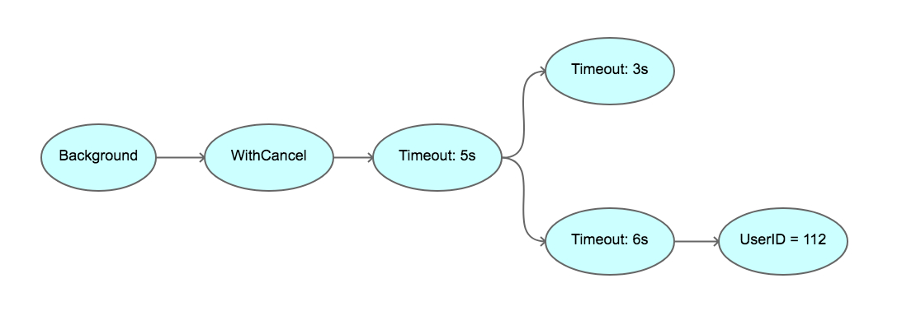
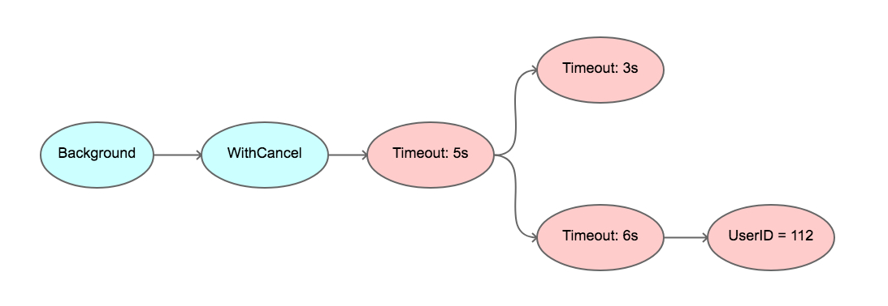

context 简介
并发控制
经典的并发控制方法
waitgroup
控制多个 goroutine
1 | func main() { |
chan 通知
全局 chan 控制【全局变量存在并发安全问题】
1 | func main() { |
context
context 树
1 | func main() { |
context 定义
1 | type Context interface { |
Deadline 方法是获取设置的截止时间的意思，第一个返回式是截止时间，到了这个时间点，Context 会自动发起取消请求；第二个返回值 ok==false 时表示没有设置截止时间，如果需要取消的话，需要调用取消函数进行取消。
Done 方法返回一个只读的 chan，类型为 struct{}，我们在 goroutine 中，如果该方法返回的 chan 可以读取，则意味着 parent context 已经发起了取消请求，我们通过 Done 方法收到这个信号后，就应该做清理操作，然后退出 goroutine，释放资源。
Err 方法返回取消的错误原因，因为什么 Context 被取消。
Value 方法获取该 Context 上绑定的值，是一个键值对，所以要通过一个 Key 才可以获取对应的值，这个值一般是线程安全的。
常用的方法：Done()、Value()
构建常用子类
1 | func WithCancel(parent Context) (ctx Context, cancel CancelFunc) //手动调用去掉函数 |
日常用法：
1 | var key string="name" |
context 实现细节
- 是不可变的(immutable)树节点
- Cancel 一个节点，会连带 Cancel 其所有子节点 （从上到下）
- Context values 是一个节点
- Value 查找是回溯树的方式 （从下到上）
context 树
1 | package main |

5s 超时之后

什么时候用 context
- 任何函数可能被阻塞，或者需要很长时间来完成的，都应该有个 context.Context
常见注意点
何时取消？
1 | ctx, cancel := context.WithTimeout(parentCtx, time.Second * 2) |
为何值不变？
context.Context 从设计上就是按照 immutable （不可变的）模式设计的
同样，Context.Value 也是 immutable 的
不要试图在 Context.Value 里存某个可变更的值，然后改变，期望别的 Context 可以看到这个改变
更别指望着在 Context.Value 里存可变的值，最后多个 goroutine 并发访问没竞争冒险啥的，因为自始至终，就是按照不可变来设计的
比如设置了超时，就别以为可以改变这个设置的超时值
为什么要采用树结构？
因为需要：根节点可以控制子节点，子节点不能控制根节点【如果使用一个单独的 context 节点，里面数据变更会影响所有 context 控制的地方。采用树结构只会影响到当前这一块区域】
深入了解
- httptrace
- errgroup